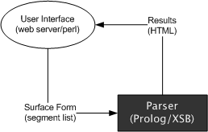
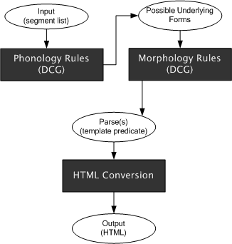
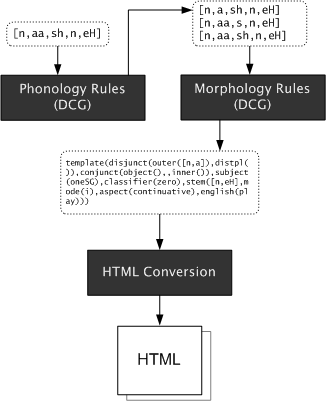

This paper will focus on Navajo verbs and finding ways to algorithmically analyze them into their constituent morphemes. Morphemes are the minimum unit of meaning in a language, and Navajo's verb morphology happens to be sufficiently complex to require more than the simple analysis required of verbs in English. For instance, a single, properly inflected Navajo verb can convey enough information to express what would require an entire sentence in English. That is a Navajo sentence could consist entirely of a single verb that contains morphemes that describe the subject, the object, and the action of the sentence.
Take the Navajo verb yishbéézh. It translates roughly into "I boil it." The verb can be analyzed into the following structure. An English translation of each morpheme also appears below.
| object | subject | classifier | stem |
| (nothing) | sh | ɫ | béézh |
| "it" | "I" | "boil" |
We see that the underlying form (also known as the morphological form) of the verb shown above differs quite a bit from the given surface form yishbéézh. The reason for this is that Navajo has a list of rules that change how strings of consonants and vowels appear when they form a certain sequence. These rules are called phonological rules. They connect the underlying form you see in the diagram with the surface form that is spoken and written by speakers of Navajo.
The ultimate goal of this project then is to put together a system that accepts surface representations of Navajo verbs and provides the morphological parses (underlying forms) of these surface forms. In order to be able to separate morphemes from each other as represented in the surface form, the phonological processes that allowed us to arrive at the surface form, must be reversed.
The Navajo verb relies exclusively on prefixes to convey subject, object and other information. It all starts with the stem that describes the verb's basic meaning which is then modified by the prefixes that appear before it. The prefixes undergo spelling (and spoken) changes depending on the vowels and consonants around it, we'll discuss this process more in the coming sections.
Faltz [1] divides the verb up into the following template. Each place in the template can contain zero or more prefixes. The first two prefix positions, outer and distributive plural, taken together are commonly referred to as the Disjunct prefix. The two prefix positions following the disjunct prefix, object and inner, are known as the Conjunct prefix.
| disjunct | conjunct | |||||
| outer | distributive plural |
object | inner | subject | classifier | stem |
The stem is the main part of the verb syntactically, and, as shown above, appears at the very end of the verb template. Semantically, it carries the main meaning describing the action or event of the verb.
The inner and outer prefixes are known as lexical prefixes, and appear as part of the stem. These prefixes carry meaning, and they may be attached to certain stems to change the meaning of that stem, however it is outside the scope of this document to describe each prefix and their meaning, so we simply take them for granted as something that comes along with a stem.
The classifier is similar to the lexical prefixes in that it does not convey meaning by itself, and it appears as part of the verb stem. However, the classifier dictates the kinds of subject prefixes a particular verb might use. They are analogous to Spanish's conjugation classes, except Navajo's classifiers are consonants. There are four classifiers in Navajo: zero, plain-L, barred-L and d.
The subject, object and distributive plural prefixes are known as inflectional prefixes. They change form depending on the subject and object of the verb. The subject describes to do-er of the action, while the object describes the person or thing to which the action is done.
The distributive plural is an extra morpheme that is required by Navajo to distinguish between two kinds of plural: duo-plural and distributive plural. Without this prefix, the non-singular subject prefixes describe groups of exactly 2 people (duo-plural). Adding this prefix to a verb changes this duo-plural prefix to allow for three or more people to be included as the subject of the verb.
Navajo also has something called the fourth person. English has no equivalent to fourth person, so it is difficult for the English speaker to understand how this construct is used. Faltz [1] lists the following as examples of its use: a polite way to refer to someone who is present in your conversation, indicating an unspecified or indefinite subject, or a way of keeping track of two third person entities in a story (i.e. use 3rd person for one entity, and 4th for the other).
So, at this point, we know that a Navajo verb can be divided up into the template given in the previous section, but what actually appears in each of the template positions? The answer is a list of segments. A segment is a linguistic term for a speech sound. Segments are often represented by one or more letters taken from the International Phonetic Alphabet, but can be represented by clusters of alphabetic characters subject to spelling rules (as in any phonetically represented language). The phonetic segment spelling we'll use for Navajo is based on Faltz [1] (which is in turn based on Young and Morgan [2]).
Navajo segments are divided into 4 vowels and 30 consonants. The four basic vowels can be modified during speech giving a total of 32 possible combinations for vowels alone. Some modifications that can occur are lengthening, nasalization, and applying a higher pitch to it than the rest of the vowel. Vowels of different values may also be combined together to form diphthongs (i.e. ei or ai). These modifications change the spelling of the vowel and require us to make note of these changes.
Now where do we get the actual list of segments to fill in each part of the template? This comes from the Navajo speaker's mental lexicon. This lexicon may be visualized as a list of something called verb bases that contain stem, prefix and classifier information. It also contains conjugation and transitivity information. These verb bases collect together all the information for a given verb that describes one particular action.
The stem of a verb can change form depending on that verb's mode. Navajo verb modes correspond to English verb tenses. They give a time reference to the action or motion the verb describes. They come in 5 varieties: Imperfective (I), Perfective (P), Future (F), Iterative (R), and Optative (O). There are actually seven total, but the other two modes re-use the stems from the F- and R-modes. Since stems change form based on mode, the verb base contains a list of forms for each mode that that verb will support. This list of forms is known as the stem-set.
With this in mind, we can view verb bases as having the following structure.
After the prefixes and stem are selected and placed in the proper template position, phonological rules take over. These rules change the spelling and pronunciation of a particular cluster of vowels and consonants depending on the clusters that come before and after it. The place in which a cluster is found is called its environment.
Faltz [1] divides these rules up based on the position in the template that rule deals with. He lists Disjunct, Conjunct, Subject, and Structure rules. Refer to his book for more details. These rules, as we'll see in the following section, are the crux of the Navajo verb parsing strategy. These rules change the form of the prefixes and morphological elements so that they are easier for a human speaker to pronounce, so in order to get to the root of the meaning of the verb, these rules need to be reversed in such a way that we obtain a list of the unchanged morphological elements from which we can determine meaning.
Turning a Navajo verb from its surface form into its morphological parts seems to require two steps. The first reverses the phonological rules described in the previous section, and the second assigns the morphological values to the separated prefixes that result from step one.
After obtaining a list of prefixes and a stem, it is fairly straightforward to determine their morphology. The prefixes (in their unchanged morphological forms) are subject to fairly strict rules regarding their placement. So, as stated before, the most difficult problem to overcome was obtaining this list of unchanged morphemes.
Initially, the project was going to be written in Perl or C# in an object-oriented style with the rules listed in the book being codified as procedures that operate on lists of segments. It became clear during the initial design phase, however, that the rule interactions were going to be too complex to code directly. It became clear that writing the solution in Prolog would be advantageous because of its ability to handle grammars natively. Both Dr. Faltz and Dr. Davulcu (my readers) mentioned that if I were to implement it in an imperative language that I might be re-duplicating code that Prolog might handle for me already.
I began writing the project in Prolog and after spending a few days in it, it became very clear that Prolog would be preferable to something like C# or Perl.
The next step was designing the interface between the Prolog system and the user. I decided that a web based application would be advantageous here since one my readers is not currently in Arizona. She would be able to access the system from the Internet. It was fairly trivial to write a Perl-based interface between the web server and Prolog.
The rules described in Appendix A of Faltz 1998 offer a comprehensive list of phonological rules that aid in the formation of proper Navajo verbs. As described before, they are divided into four sections depending on which part of the template they operate: Disjunct, Conjunct, Subject and Structure.
The main part of the project was writing Prolog rules for definite clause grammars (DCG) that had the effect of reversing these phonological rules. This was no easy task, however, since each rule depended on having some information about the verb's morphology before we even had that information (the rules were written with synthesis in mind, not analysis). Also, some rules depended on others to be applied in a certain order.
To cope with this, the reversal rules were written such that each rule was implemented as its own stand-alone DCG that generated possible underlying forms based on the given list of segments. Each of these rules was put into a list, and the initially given surface form would be passed to the first rule on the list. This rule would generate possibly underlying forms adding to the list of total possibly underlying forms. Each rule would be applied in turn to this list (possibly generating more forms to add to the list) until all the rules are exhausted. The order that the rules appear in the rule list depends on the interaction required by certain rules.
After all the rules are applied, the result is a long list of all possible underlying forms of the given surface form. This list is then narrowed down to one or more valid form as dictated by morphology constraints (also implemented as a DCG). Note, two or more valid forms may be found if the verb has an ambiguous surface form. This sometimes happens in Navajo.
The verb base list was written as an XML document with each of the elements described above as tags. XML was chosen in the hopes that it may be useful for others to port into their Navajo-based system. My system takes the XML document and converts them into a list of Prolog predicates.
The XML schema is follows the structure listed in the Lexicon and Verb Bases section. Here is a typical entry for a verb base:
<VerbBase>
<StemSet>
<I>nééh</I>
<P>na'</P>
<F>nah</F>
<R>nah</R>
<O>nééh</O>
</StemSet>
<Gloss>
<English>be crawling</English>
</Gloss>
<Aspect>momentaneous</Aspect>
<Classifier>d</Classifier>
<Prefix>
<Inner>d</Inner>
</Prefix>
<Conjugation>lv</Conjugation>
<Transitivity>transitive</Transitivity>
</VerbBase>
The segments described in the Navajo verb section are divided into consonants and vowels. These segments are represented at the user interface by Unicode and as sequences of alphabetic characters in the Prolog system.
There are three special characters that cannot be directly represented by ASCII alphabetic characters, these are the barred-l (ɫ), the high tone diacritic mark (ó) and the nasal diacritic mark (oͅ). Unicode allows the combination of these two diacritic marks as long as the nasal appears after the high-tone mark. The user interface is a web browser, so it can display these characters correctly, but because the version of Prolog I used does not support Unicode directly, these characters must be converted to plain ASCII characters and back. The following mapping was used to convert the user interface representation to a version that can be manipulated by Prolog.
| Segment/Feature | ASCII |
|---|---|
| barred-l | lB |
| high-tone | H |
| nasal | N |
| high-tone and nasal | HN |
Now, in order to take advantage of discrete clause grammars that Prolog allows us to use, we need to represent the surface form as a list of segments. This means we need a way to make sure that sequences of ASCII characters get separated into the proper segments.
To illustrate, take the verb naashné which means "I play" and has a high-tone diacritic mark on the last vowel. This can be represented by naashneH in ASCII. We want to make sure that it gets turned into a list that looks like: [n, aa, sh, n, eH], not something like [n, aa, s, h, n, eH]. In Navajo, sh is a single consonant, so taking it as two consonants s,h is incorrect. Incidentally, if one needs to represent two consonants s and h following each other, the h turns to an x yielding "sx".
How does this get resolved? The answer is to match the beginning of the inputted surface form with a list of segments sorted in order of longest to shortest and matching each with the beginning of the inputted surface until a match is found. After a segment is found, we copy that into our list of segments, and remove that sequence of characters from the beginning of the string. This is repeated until no more characters are left in the input string. If at any time during the matching, the list is exhausted, and no matches were found, we know the input contains some characters that do not belong in the Navajo verb spelling.
Checking the longest segments first ensures that we always obtain the proper segments because it is the longer consonant clusters that we do not want to confuse with the shorter clusters. Thus, matching and removing the longer clusters first disallows the shorter ones to erroneously match on subsequent iterations of the main loop.
It is easy to represent data in Prolog as something called a predicate which consist of a head followed by a list of arguments. These arguments can either be an atom, another predicate or a list of predicates and atoms. An atom is simply a word or token containing only alphanumeric characters. Here is an example of a Prolog predicate:
head(atom, head2(atom2), atom3)
With this in mind, we can then see that the easiest way to represent the morphology of a parsed Navajo verb is something approximating the template given in previous section.
template(
disjunct(outer(outer),
distpl(da or empty)),
conjunct(object(object),
inner(inner)),
subject(subject),
classifier(classifier),
stem(stem)
)
Figure 1. Template as a Prolog predicate.
Thus, the result of a parse looks something similar to Figure 1.
At this point, we have the following:
So the top level diagram of this system looks something like this:
 Figure 2. Top-level diagram of the parsing system.
The user interface produces the list of segments described in the preceding section. The parser takes this list, applies phonological rules (represented as DCGs). The list of possible underlying phonological forms is then matched against morphology rules producing a template of the form given in figure 1. This template is then converted to HTML for the user's consumption. Refer to figure 3 for a breakdown of this process.
 Figure 3. Diagram of the Prolog system.
Figure 4 shows an example of a verb travelling through this process. The actual forms are simplified from what really is used in the system, but the idea comes across.
 Figure 4. "I play" travelling through the system.
As with any natural language, forms used in a language don't always follow the rules. Navajo is no exception, and as such, we have focused the parser to work on a limited subset of the Navajo verb. This subset includes limiting the supported modes to Imperfective, Perfective and Future. Some things that are not supported include the following:
Obviously, the next step for improvement of this parser is to add these features.
There are some forms surface level forms that map to multiple underlying morphology templates. Sometimes this is valid, and it is known that these forms are ambiguous. The problem, however, is that in a few cases where the system shows two or more templates, the forms entered are not supposed to be ambiguous.
This problem stems from the phonology reversing rules. They were written to be as general as possible, and as a result, they sometimes produce underlying forms that may be interpreted in more than one way. To curb this problem, I have the rules produce guesses on what certain parts of the verb mean at the time that rule sees it. This limits the number of erroneous templates, but does not eliminate them. A refinement of this system would decrease the number of incorrectly identified ambiguous parses.
Also, the parser is limited to parsing verbs it knows about that is only the verbs that come from the verb bases in the verb base lexicon can be parsed correctly. This is not so much a limitation as inherent to the design of the project. A possible goal for the future would be to have it automatically determine the stem, mode, aspect and classifier without reference to a lexicon. This, however, may be a diffcult prospect.
The Navajo verb parser takes a Navajo verb in its fully inflected form and maps it to one or more templates that describe its morphology. This mapping takes place after reversing phonological rules required by the Navajo language. These rules along with the morphology matching are implemented in Prolog. The interface between the user and the Prolog subsystem is implemented with Perl through a web server.